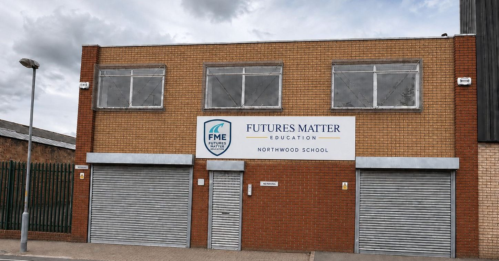
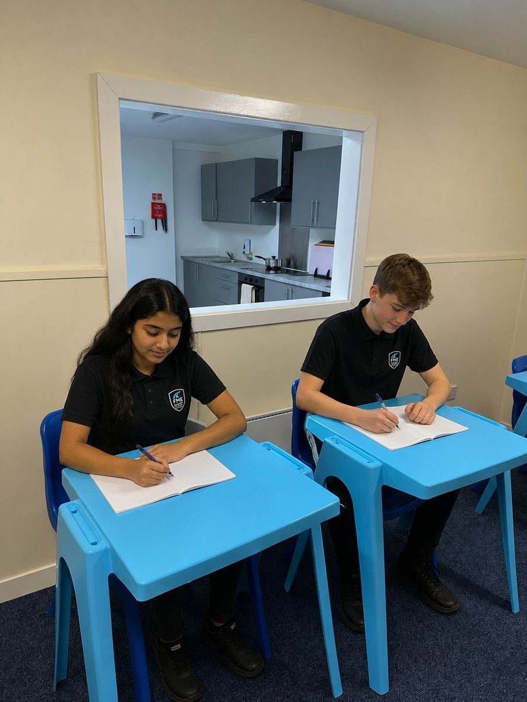
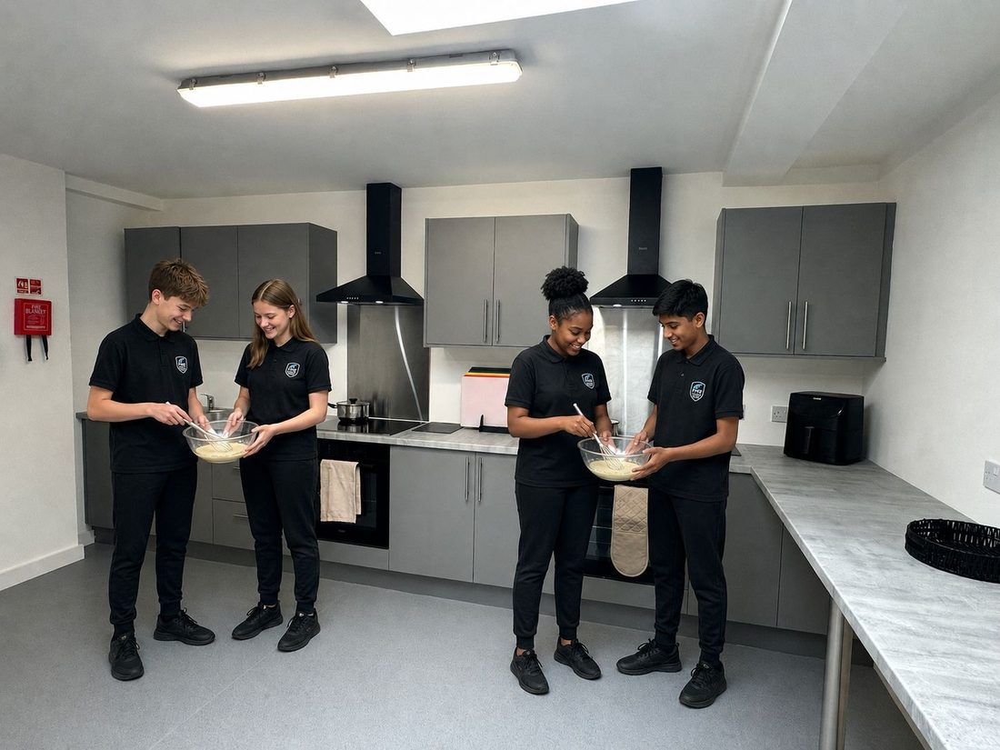
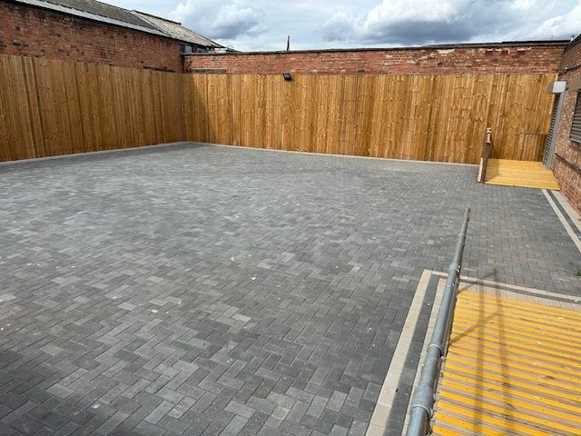

Independent Specialist Day SchoolFutures Matter – Northwood
A Fresh Start
A fresh start for secondary‑age pupils.
Futures Matter – Northwood is a DfE‑registered, independent specialist day school in Highgate, Birmingham, providing high‑quality education for boys and girls aged 11 to 16 with a range of needs, including moderate learning difficulties, speech, language and communication difficulties, autism, and social, emotional and mental health needs.
Futures Matter Education Ltd was set up by a group of highly experienced, like‑minded professionals, well known for supporting children and young people with a range of needs. Our company name reflects what we firmly believe: that everyone's future matters.
We aim to:
- Deliver a broad, balanced and ambitious curriculum, differentiated to individual needs and interests
- Provide the experiences and skills pupils need for their next stage of life – further education, employment and active roles in society
- Support pupils' needs so they can access, enjoy and succeed in school
- Ensure staff are well supported to deliver excellent education, through ongoing professional development

Our Building's Story
Every building has a story. Ours is still being written.
For generations, 122 Emily Street was home to Northwood Engineering Company (B'ham) Limited, a family‑run British engineering business established in 1985 – a place of precision milling, drilling and turning, built on craftsmanship, accuracy and hard work.
As that chapter closed, our family was determined the building would begin a new one serving its community once again. Where it once helped manufacture precision components, it is now a place for shaping something even more important: young people's futures. The principles remain the same – patience, precision, perseverance, and the understanding that every individual has potential when given the right tools and support.
The purpose may have changed, but the ambition has not: to create, to develop, to take pride in what we do, and to build something that lasts.
I bring 20 years of experience in SEMH and specialist education. At Northwood, we are building something different: a school where every young person is met exactly where they are, regardless of prior attainment, and where we hold high challenge and high aspiration alongside a genuinely low threat, low barrier environment. These are not opposites – together they are what allows young people to truly engage.
Our Vision, Ethos & Values
Developing pupils as individuals, in an environment that is both enjoyable and safe.
At all Key Stages, our curriculum is structured to help learners secure success academically, personally, developmentally and in life beyond school.
Kind
We value each pupil as an individual and embrace difference.
Safe
A safe, welcoming environment where pupils are protected from harm.
Ambitious
High aspirations and expectations of staff and pupils alike.
Respectful
Integrity, courtesy, trust, care and respect in all we do.
Our Curriculum
Everyone has a personal best – we play a vital role in making that a reality.
Our curriculum is pupil‑centred, ambitious, relevant and engaging, giving pupils a range of experiences, skills and qualifications that provide a solid foundation for success in life.
Nurture Pathway
For pupils who need to build confidence, regulation and engagement first. Personalised, skills‑based learning in subjects that motivate and interest them.
Academic Pathway
A broad, ambitious academic curriculum leading to GCSEs and equivalents, for pupils ready for more traditional subject‑based study.
Accreditation
We encourage and support all pupils to leave school having sat at least 5 GCSEs or equivalent. Accreditation starts in Year 7 with AQA Unit Awards and Entry Level qualifications; by Year 9, pupils can sit Level 1 Functional Skills. At Key Stage 4, pupils sit a personalised range of Functional Skills, Gateway qualifications, GCSEs and equivalents, alongside life skill qualifications including Basic First Aid, Food Hygiene and ASDAN Awards.
Healthy Lifestyles
We support pupils to understand the benefits of living a healthy lifestyle and making good life choices, starting from a healthy breakfast on arrival. School lunch is provided, with a range of choices including foods from around the world.

Personal & Social Development
Developing the whole child, alongside academic progress.
If a pupil is not mentally healthy and has social and emotional difficulties, this can affect their readiness to learn – so personal, social and emotional development sits alongside academic progress at every stage.
Trauma‑Informed Practice
Staff are trained in trauma informed, relational practice, putting pupils' emotional needs first so they can re‑engage with learning.
Relationships & Sex Education
Age and ability appropriate RSE, preparing pupils to recognise and sustain healthy, safe relationships.
Careers & Work‑Related Learning
A key feature of our curriculum at every Key Stage, preparing pupils for life, training and employment beyond school.
Behaviour, Rewards & Sanctions
Pupils are recognised and rewarded for positive engagement and progress, with personalised targets linked to their EHCP.
Our Staff, Safeguarding & Wellbeing
A highly experienced, closely trained team.
We follow rigorous safer recruitment processes to ensure high‑quality staff are recruited and that pupils are kept safe. Senior leaders involved in recruitment are trained in Safer Recruitment, and all staff undergo comprehensive checks, including references and an Enhanced DBS check.
| Role | Status |
|---|---|
| Head Teacher | Benjamin Neasom (in post) |
| Deputy Head Teacher | To be recruited |
| Assistant Head Teacher | To be recruited |
| Teacher | To be recruited |
| Higher Level Teaching Assistant | To be recruited |
| Teaching Assistant | Kiana (in post) |
| Instructors | Simone (in post) – Food Technology |
| Administrator / Caretaker | To be recruited |
| Safeguarding contact | Details |
|---|---|
| Designated Safeguarding Lead (DSL) | Benjamin Neasom – benjamin.neasom@futuresmattereducation.co.uk |
| Deputy Designated Safeguarding Lead (DDSL) | Carrie‑Ann McGurk – Carrie-Ann@futuresmattereducation.co.uk |
Our school follows Keeping Children Safe in Education (KCSIE) at all times. We are a ‘telling school’, where pupils, parents, carers and staff are encouraged to raise any concerns, and our curriculum teaches and promotes British Values of tolerance, respect, equality and diversity.
Meet Some of Our Team
We're delighted to welcome new members to our growing team at Futures Matter – Northwood.
Kiana
“My skill set spans many sectors including education, prison, probation, housing and residential care. I chose to work at FME because I'm passionate about having a positive impact on young people – helping them build confidence, develop independence, and realise their potential.”
Simone
“I specialise in Food Technology, and I've always believed the kitchen is one of the best classrooms in the world. I joined FME because working in an SEN provision means supporting young people in ways that truly matter.”
School Uniform
- White polo shirt or school shirt
- Black trousers
- Plain black sweatshirt, jumper or cardigan (not a hoody)
- Smart, plain black footwear (no heels or flip flops)
P.E. Kit & Equipment
- Plain black P.E. shorts, jogging bottoms or tracksuit
- Plain white t‑shirt
- Plimsolls or training shoes
- We provide all other equipment – bags should contain only a pencil case, home/school diary, P.E. kit and sanitary products as appropriate
Term Dates & The School Day
190 days a year, 32.5 hours a week.
Pupils attend school for 190 days over 38 weeks, aligned as far as possible with Birmingham City Council term dates.
| Time | Activity |
|---|---|
| 8.45 | Arrival and Breakfast Club |
| 9.00 | Tutor Groups and Registration |
| 9.10 | Period 1 |
| 9.55 | Period 2 |
| 10.40 | Break |
| 10.55 | Period 3 |
| 11.40 | Period 4 |
| 12.25 | Lunch |
| 12.55 | Tutor Groups and Registration |
| 13.00 | Period 5 |
| 14.00 | Period 6 |
| 15.00 | Tutor Groups |
| 15.15 | School ends – pupils escorted to transport home |
Our Admissions Process
How a placement with us begins.
We specialise in supporting children aged 11 to 16 with moderate learning difficulties, communication and interaction needs, autism, or social, emotional and mental health needs. Referrals must come to us directly from the pupil's local authority, at any point in the year.
Referral
Referrals come directly from the pupil's local authority, considered by our Admissions Panel.
Meeting
If we believe we might be able to meet the child's needs, we arrange to meet the child and their parent/carer to learn more, before a place is offered.
Decision
We confirm whether the placement is likely to be successful for everyone concerned, and agree a contract, fees and transport arrangements with the local authority and school.
Placement
A start date is agreed – always the earliest date we can facilitate a smooth, personalised admission. Every pupil has a personalised Admission Programme supporting a smooth transition.
An early Annual Review meeting is called within the first 12 weeks of admission, and Transition Review Meetings are held at key points (Years 6, 9 and 11) to agree whether EHCP objectives have been met or need updating.
Find Us
122 Emily Street, Highgate, Birmingham, B12 0XJ
We're conveniently located in Highgate, Birmingham, with good access by road and bus.
- Bullring20 min walk · 5 min drive
- Highgate Park7 min walk · 4 min drive
- Cannon Hill Park35 min walk · 10 min drive
- Local bus routes2, 5, 6, 8, 35, 50

Practical Information
If English is not the first language
A child's need for additional support is identified during the referral process, and appropriate provision put in place before admission, including one‑to‑one support from a bi‑lingual Teaching Assistant, or an interpreter for meetings where needed.
Complaints procedure
In accordance with the Independent School Standards and the Children's Act 1989, informal complaints are addressed with a pupil's Tutor or class teacher; formal complaints are reported directly to the Head Teacher, or the Proprietor if the complaint concerns the Head Teacher.
Get in Touch
Talk to us about a placement.
Whether you're a parent, carer, social worker or SEND caseworker, we're happy to answer questions before any formal referral is made.
Head Teacher
Proprietor
Address
122 Emily Street, Highgate
Birmingham, B12 0XJ